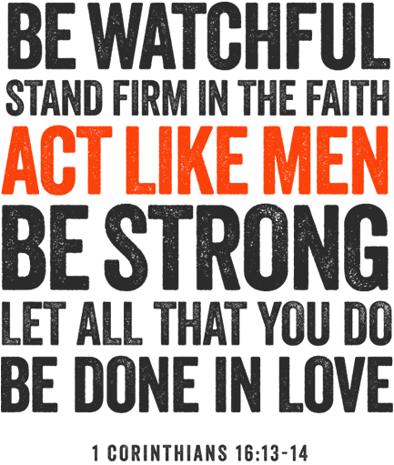

We wanted to give you a gift that was meaningful... something that we thought would not just be something that you picked up and played with for a little while, but something that you could keep coming back to and that would really encourages you again and again.
As the days and years go by, I realize how empty "things" can be. It is relationships, friendships, and family that matter the most. This starts with our relationship with God as we are adopted into His family. Then it reaches out and touches everything else.
Whether you realize it or not, you are the spiritual leader of the Simcoe family. You are connected to the faith of your Dad but in a real sense, you are the first link in a chain of faith that brought me into relationship with Jesus and began a legacy of faith that is carrying through to our children.
Over the past month the theme of legacy has been huge for me personally and also for us a family. It is a massive theme in the Bible as it relates to being a man and being a leader. God wants us to consider and take seriously the legacy that we leave behind to the next generation. Now, we have 3 generations of Simcoes and you are the first link in the chain of faith that will carry through to our children and their children someday.
I told you about this teaching around a month ago but I wanted to have you consider it again as a powerful introduction to this theme of legacy and something that connects to your Christmas present this year:
I grew up in our home knowing about Jesus but never really having a deep, personal relationship with Him. That all changed when I saw you come to saving faith in Christ and went through crisis and realized that I needed Jesus as well. I was introduced to him growing up but I didn't fall in love until my college years.
I still look to you as the spiritual leader of our family. We look up to you to continue the legacy of faith that was planted in you from your child and that now dwells in your children, and God-willing, your grandchildren and beyond. I am learning to think about my life in terms of the legacy that I will leave behind. I pray that you would be impacted by this theme as well and that your Christmas gift this year would be used sovereignly by God to stir up your passion and affection even more for Jesus and that these teachings would stir you up in radical ways.
I've heard over and over from different people that the Act Like Men Conference was a powerful call to robust, Biblical manhood and that it impacted thousands of people, even bringing over a thousand to saving faith. We pray that this Christmas and gift would move you in ways that none of us can even realize or understand. We love you so much and pray that you have a wonderful Christmas, birthday, and year to follow!
Love,
Jonathan, Colsey, Desider & Doxi
